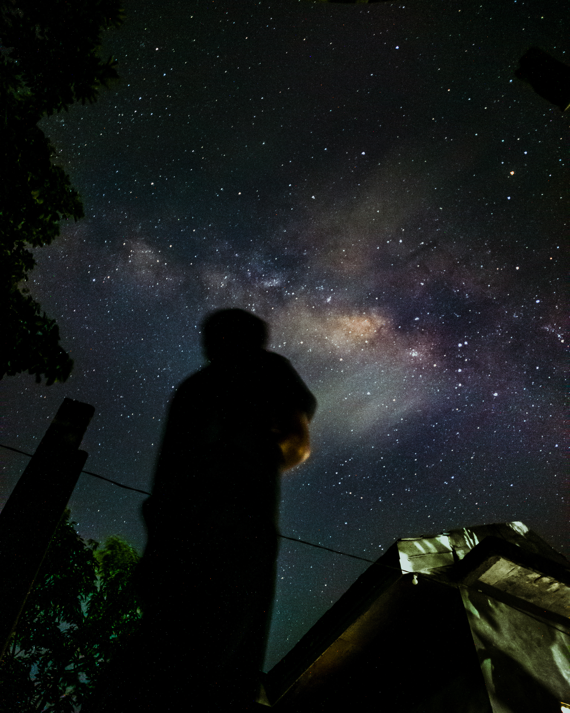
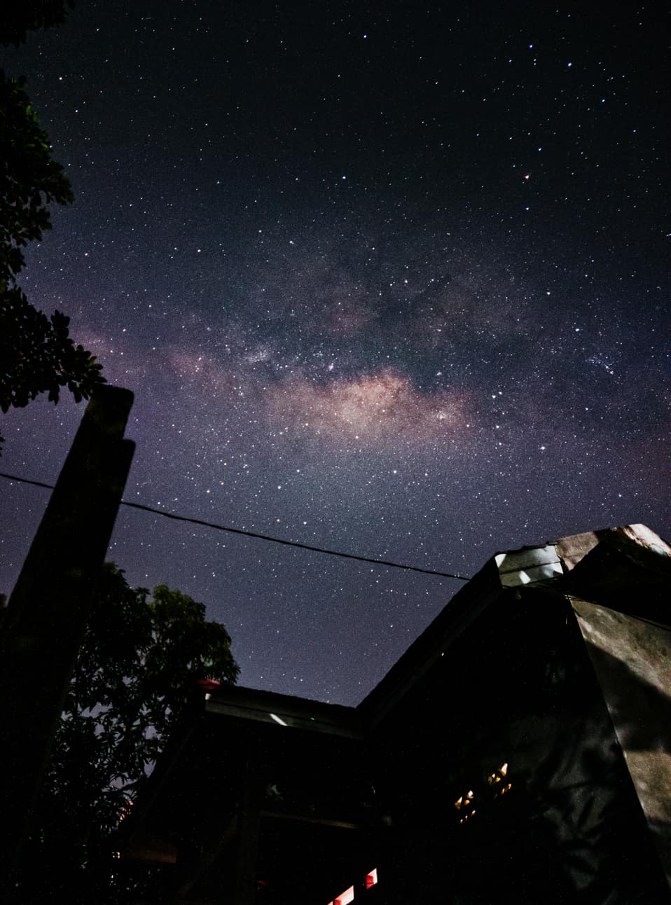
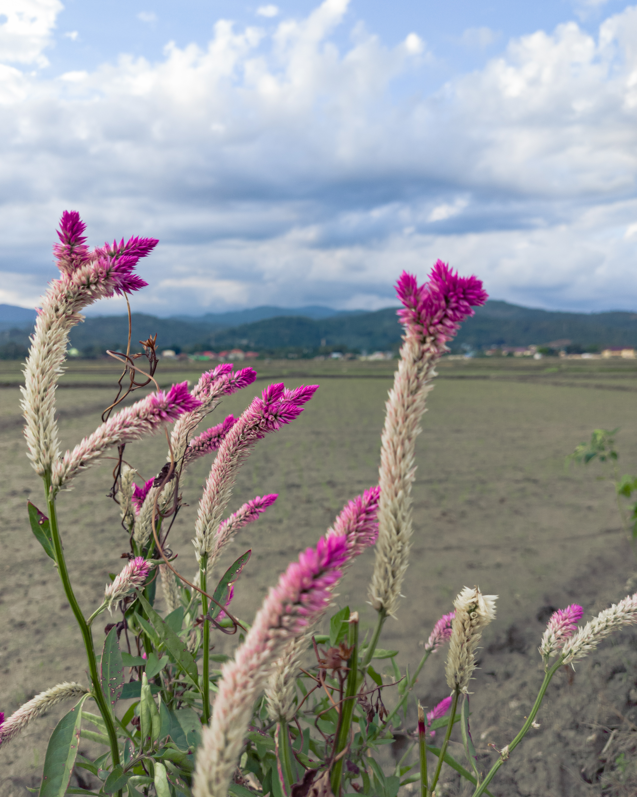
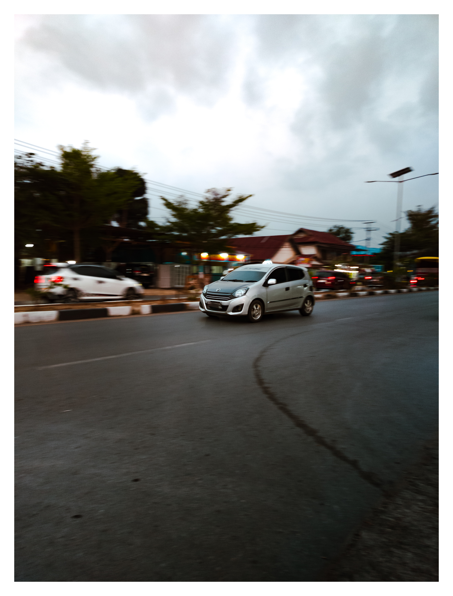
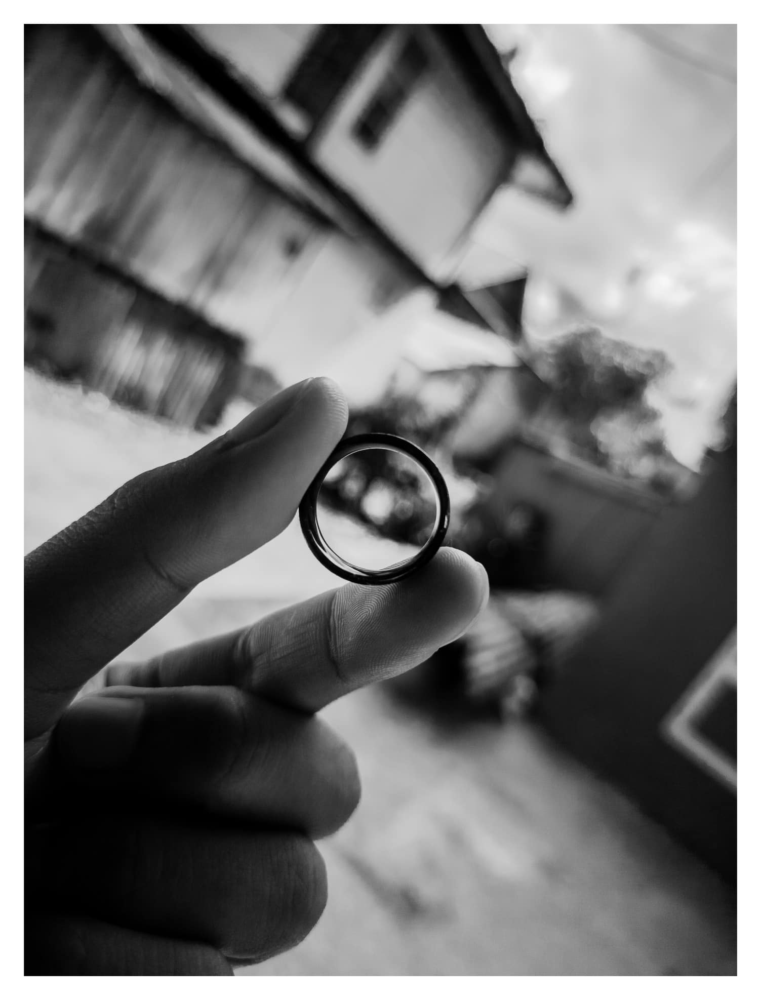

Halo, Saya Kamrillah. S
Merangkai Logika, Mengabadikan Semesta
Mahasiswa Pendidikan Matematika Universitas Sembilanbelas November Kolaka yang memiliki ketertarikan pada fotografi, videografi, dan eksplorasi visual kreatif hanya bermodalkan smartphone.
Tentang Saya
Perkenalkan, nama saya Kamrillah. S. Kalian bisa panggil saya Aril atau Beliau. Saat ini saya sedang menempuh studi di Program Studi Pendidikan Matematika, Universitas Sembilanbelas November Kolaka. Di luar rutinitas akademis, saya adalah seorang pecinta fotografi dan videografi yang mengandalkan smartphone sebagai medium utama berkarya.
Bagi saya, keindahan visual tidak selalu menuntut peralatan yang rumit. Melalui lensa sederhana, saya belajar menangkap momen sehari-hari, menonjolkan detail yang sering terlewatkan, dan merangkai cerita visual yang jujur. Keterbatasan alat justru menjadi ruang eksplorasi untuk memaksimalkan kreativitas.
Dalam setiap proses kreatifnya, saya berdiskusi dengan Gemini untuk membedah konsep, menyempurnakan narasi, hingga mengkurasi ide. Perpaduan antara pemikiran analitis dari latar belakang matematika, kepekaan menangkap momen, dan pendampingan teknologi menghasilkan karya yang autentik.
Melalui karya-karya visual yang saya hasilkan, saya berusaha menangkap cerita sederhana yang sering terlewatkan oleh banyak orang.
"Keindahan tidak dibatasi oleh alat, tetapi oleh cara kita melihat."
Galeri Visual
Kurasi perjalanan visual dari langit malam, ketenangan alam, dinamika jalanan, hingga eksplorasi monokrom.

AstroMenembus Batas Malam
Mengejar keheningan dan gugusan bintang di langit malam dengan teknik long exposure.

NatureDetak Nadi Alam
Menangkap detail tekstur dan ketenangan alam sekitar yang sering terlewatkan.

StreetDinamika Jalanan
Cerita jujur tentang kehidupan dan interaksi di hiruk-pikuk sudut kota.

B&WEsensi Tanpa Warna
Permainan cahaya, bayangan, serta karakter subjek dalam format monokrom.
Mari Terhubung
Terbuka untuk kolaborasi, diskusi fotografi smartphone, pendidikan matematika, penelitian, proyek kreatif lainnya, atau sekedar ingin menyapa?